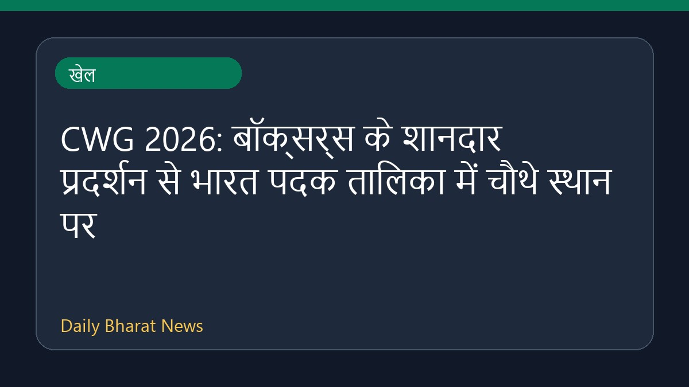

CWG 2026: बॉक्सर्स के शानदार प्रदर्शन से भारत पदक तालिका में चौथे स्थान पर

ग्लासगो कॉमनवेल्थ गेम्स के दसवें दिन भारतीय बॉक्सर्स ने शानदार प्रदर्शन करते हुए सात स्वर्ण और तीन रजत पदक जीते। इस ऐतिहासिक अभियान के दम पर भारत पदक तालिका में चौथे स्थान पर पहुंच गया है। मुक्केबाजों के इस रिकॉर्ड तोड़ प्रदर्शन से देश का नाम रोशन हुआ है, जिसमें जैस्मिन की प्रेरणादायक जीत भी शामिल है। अन्य मुकाबलों और पदकों के साथ भारत की स्थिति मजबूत हुई है। इस संबंध में अधिक और विस्तृत जानकारी अभी सीमित है।
मूल स्रोत: Sports News Sources
CWG 2026 Medal Tally: India in fourth spot after boxers win seven gold medals on Day 10 - Sportstar ↗
CWG 2026 Medal Tally: India in fourth spot after boxers win seven gold medals on Day 10 - Sportstar ↗